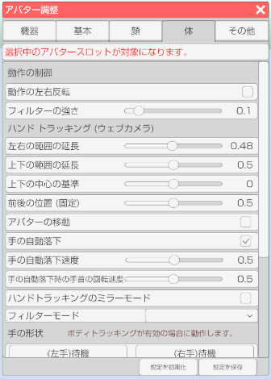

右側メニューのアバター調整のアイコンをクリックします。

体タブを選択します。

アバターのフェイストラッキングの調整や設定を行います。
右側メニューのアバター調整のアイコンをクリックします。
体タブを選択します。

アバターを複数読み込んでいる場合にどのアバターを対象にするかを選択します。
動作の左右反転
体の動作を全て左右反転します。
※モーションやトラッキング等、全ての動作が対象となります。
フィルターの強さ
標準は 0.1 です。素早い動きを優先したい場合は 0 でフィルターをオフにしてください。
※モーションやトラッキング等、全ての動作が対象となります。
準備中。
前後の位置
腕や手を動かす基準値の前後を変更します。
上下の位置
腕や手を動かす基準値の上下を変更します。
スケール
値を大きくすると動きが激しくなります。
ボディトラッキング(VRやPerception Neuron)が有効な場合に動作します。
形状の変化速度
手の形状が変化し終わるまでの時間を変更します。